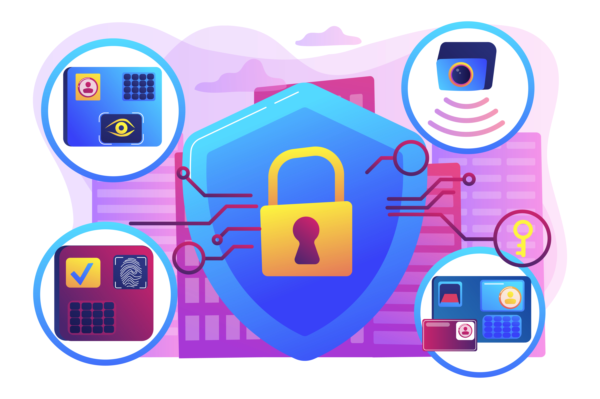

Qui sommes nous ?
Aujourd'hui la société J.A HOME SERVICES avec ses 10 d'expérience dans le domaine de la sécurité de vos biens et personnes.
J.A HOME SERVICES vous propose son expérience et son savoir-faire pour équiper votre habitat, , votre entreprises, vos locaux dans le souci d'un environnement sécurisé au maximum avec la gestion à distance de vos biens.
J.A HOME SERVICES vous conseillera, vous orientera afin de protéger, de surveiller vos biens , et d'être au plus prêt de votre budget.
Vivez tranquille !


RETROUVEZ NOUS SUR LES RÉSEAUX SOCIAUX